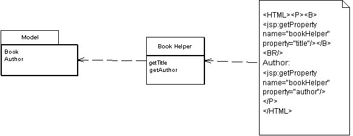

Template View (Шаблонизатор)

Паттерн проектирования Template View
Описание Template View
Заполняет HTML-шаблон информацией при помощи маркеров, указанных в шаблоне.
Создание приложений, генерирующих HTML, зачастую гораздо более сложно, чем кажется. Несмотря на то, что современные языки программирования стали лучше справляться с обработкой текста, создание, и конкатенация строк всё ещё представляется проблемой. Если надо выводить немного информации - это не так страшно, но если надо сгенерировать целую HTML-страницу - появляется много работы с текстом.
В случае со статическими HTML-страницами, которые не меняются от запроса к запросу, можно использоваться удобный WYSIWYG-редактор. Даже те, кто любят обычные текстовые редакторы согласятся, что набирать текст и тэги проще и удобнее, чем собирать их через конкатенации в языке программирования.
Конечно, возникает проблема в случае с динамическими страницами, которые, например, берут данные из БД и наполняют ими HTML. Страницы выглядят по-разному каждый раз, и использование обычного HTML-редактора не подходит.
Наилучший выход из положения - создание динамических страниц так же, как и статических, но помечая их маркерами, которые могут быть заменены динамической информацией.
Пример: при обработке шаблона, области, помеченные специальными маркерами (на иллюстрации - тегами <jsp:.../>) заменяются результатами вызовов методов helper'a.
Использована иллюстрация с сайта Мартина Фаулера.